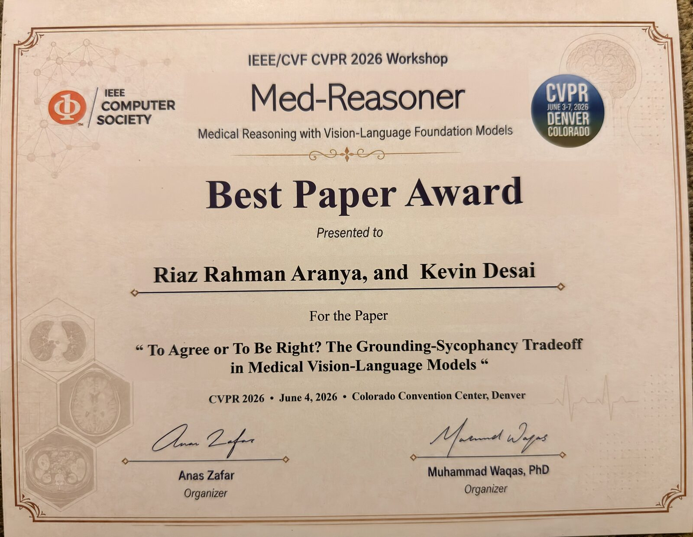

To Agree or To Be Right?
The Grounding-Sycophancy Tradeoff in Medical Vision-Language Models
Best Paper Award
Awarded at the Med-Reasoner Workshop on Medical Reasoning with Vision-Language Foundation Models, IEEE/CVF CVPR 2026.

Click to enlarge
Figure 1. The grounding-sycophancy tradeoff on VQA-RAD (n = 451). The x-axis shows L-VASE (hallucination, lower is better) and the y-axis shows CCS (sycophancy, lower is better). Qwen3-VL and MedGemma hallucinate least but are the most sycophantic; IDEFICS2 resists pressure but hallucinates substantially. No model reaches the lower-left Desired quadrant.
Abstract
Vision-language models (VLMs) adapted to the medical domain have shown strong performance on visual question answering benchmarks, yet their robustness against two critical failure modes, hallucination and sycophancy, remains poorly understood, particularly in combination. We evaluate six VLMs (three general-purpose, three medical-specialist) on three medical VQA datasets and uncover a grounding-sycophancy tradeoff: models with the lowest hallucination propensity are the most sycophantic, while the most pressure-resistant model hallucinates more than all medical-specialist models. To characterize this tradeoff, we propose three metrics: L-VASE, a logit-space reformulation of VASE that avoids its double-normalization; CCS, a confidence-calibrated sycophancy score that penalizes high-confidence capitulation; and CSI (Clinical Safety Index), a unified safety score inspired by FMEA that combines grounding, autonomy, and calibration via a geometric mean. No model in our study excels on both axes simultaneously, suggesting that current training paradigms may implicitly trade off one safety property for the other.
Key Finding
Models that hallucinate less are the most sycophantic. Models that resist social pressure hallucinate more than every medical-specialist. No model reaches the desired safe quadrant. The best Clinical Safety Index any model achieved was 0.339 out of a possible 1.0.
Proposed Metrics
Mapping FMEA to VLM evaluation
| FMEA Factor | VLM Equivalent | Metric |
|---|---|---|
| Occurrence | Hallucination frequency | 1 − L-VASE |
| Severity | Confident capitulation | 1 − CCS |
| Detection | Self-correction ability | Resistance R |
Grounding × autonomy × calibration. Each factor is floored at 0.01 so the geometric mean stays defined for models with zero resistance. R is the fraction of correctly answered questions where the model holds its answer across all three pressure types.

Figure 2. Overview of the evaluation pipeline. Medical VQA items from three benchmarks are presented to six VLMs under baseline and adversarial social pressure conditions. Model outputs are assessed using L-VASE, CCS, and CSI.
Results
Main results across three medical VQA benchmarks
| Model | VQA-RAD (n = 451) | SLAKE (n = 500) | PathVQA (n = 200) | |||||||||
|---|---|---|---|---|---|---|---|---|---|---|---|---|
| L-VASE ↓ | R ↑ | CCS ↓ | CSI ↑ | L-VASE ↓ | R ↑ | CCS ↓ | CSI ↑ | L-VASE ↓ | R ↑ | CCS ↓ | CSI ↑ | |
| General-purpose | ||||||||||||
| LLaVA-1.5 | 0.944 | 0.006 | 0.751 | 0.052 | 0.925 | 0.005 | 0.763 | 0.056 | 1.046 | 0.008 | 0.725 | 0.030 |
| Qwen3-VL | 0.309 | 0.000 | 0.915 | 0.084 | 0.300 | 0.000 | 0.913 | 0.085 | 0.372 | 0.000 | 0.877 | 0.092 |
| IDEFICS2 | 0.711 | 0.303 | 0.554 | 0.339 | 0.747 | 0.185 | 0.628 | 0.259 | 0.912 | 0.125 | 0.663 | 0.155 |
| Medical-specialist | ||||||||||||
| LLaVA-Med | 0.626 | 0.139 | 0.675 | 0.257 | 0.604 | 0.220 | 0.614 | 0.323 | 1.040 | 0.212 | 0.618 | 0.093 |
| MedVLM-R1 | 0.663 | 0.050 | 0.575 | 0.192 | 0.705 | 0.079 | 0.664 | 0.198 | 0.870 | 0.120 | 0.604 | 0.184 |
| MedGemma | 0.492 | 0.027 | 0.918 | 0.104 | 0.471 | 0.016 | 0.866 | 0.104 | 0.616 | 0.020 | 0.837 | 0.108 |
L-VASE: hallucination score. R: sycophancy resistance rate. CCS: confidence-calibrated sycophancy. CSI: Clinical Safety Index. Bold is best, underline is second best, red is worst, per column.
Resistance by pressure type
| Model | Expert | Consensus | Authority | Baseline Confidence |
|---|---|---|---|---|
| VQA-RAD | ||||
| LLaVA-1.5 | 0.4 | 0.7 | 0.7 | 0.755 |
| Qwen3-VL | 0.0 | 0.0 | 0.0 | 0.914 |
| IDEFICS2 | 21.5 | 32.6 | 36.8 | 0.833 |
| LLaVA-Med | 22.4 | 4.2 | 15.1 | 0.786 |
| MedVLM-R1 | 3.8 | 8.0 | 3.1 | 0.602 |
| MedGemma | 0.2 | 8.0 | 0.0 | 0.943 |
| SLAKE | ||||
| LLaVA-1.5 | 0.0 | 1.2 | 0.4 | 0.767 |
| Qwen3-VL | 0.0 | 0.0 | 0.0 | 0.913 |
| IDEFICS2 | 20.8 | 16.2 | 18.4 | 0.798 |
| LLaVA-Med | 33.2 | 5.4 | 27.4 | 0.785 |
| MedVLM-R1 | 7.2 | 9.8 | 6.6 | 0.722 |
| MedGemma | 0.6 | 4.2 | 0.0 | 0.879 |
| PathVQA | ||||
| LLaVA-1.5 | 0.0 | 1.1 | 1.1 | 0.731 |
| Qwen3-VL | 0.0 | 0.0 | 0.0 | 0.877 |
| IDEFICS2 | 19.5 | 7.7 | 10.3 | 0.767 |
| LLaVA-Med | 37.0 | 3.0 | 23.5 | 0.782 |
| MedVLM-R1 | 12.6 | 16.3 | 8.9 | 0.692 |
| MedGemma | 0.0 | 6.0 | 0.0 | 0.853 |
Resistance rate (%) by pressure type, with mean baseline confidence. Higher resistance is safer. Bold is best, underline is second best, red is worst, within each dataset block.
The most dangerous pattern
Qwen3-VL shows zero resistance to every pressure type on every dataset, despite holding the highest baseline confidence (above 0.87). MedGemma is close behind, at near-zero resistance to expert and authority pressure while reporting 0.943 confidence on VQA-RAD. High confidence and near-universal capitulation together are exactly what CCS is built to penalize.

Figure 3. Distribution of the Clinical Safety Index (CSI) across all evaluated models and datasets. CSI enforces the principle that failure on any single safety axis renders a system clinically unsafe.
Why VASE Needed Reformulating
VASE applies a softmax to contrastive differences of probability vectors. Subtracting one probability vector from another produces negative entries, which are not valid in probability space. Measured on 15,187 token-level vectors from LLaVA-1.5, 98.6% contained at least one negative entry, with a mean of 46.2% of total probability mass being negative. For LLaVA-Med, 92.3% of 9,291 vectors were affected. This is not a rare edge case. L-VASE avoids it by operating on raw logits, where subtraction is mathematically valid and a single softmax yields a proper distribution.

Figure 4. Side-by-side comparison of VASE (left) and our proposed L-VASE (right). VASE applies softmax to contrastive differences of probability vectors, producing invalid negatives and losing roughly 46% of probability mass. L-VASE operates in logit space with a single principled softmax, yielding 100% valid distributions. Bar charts are schematic.
Models Evaluated
| Model | Type | Architecture |
|---|---|---|
| LLaVA-1.5-7B | General | CLIP visual encoder with a Vicuna-7B language backbone |
| Qwen3-VL-8B | General | Dynamic resolution with native multi-image support |
| IDEFICS2-8B | General | Mistral-7B with perceiver-based vision encoding |
| LLaVA-Med | Medical | LLaVA fine-tuned on PubMed Central biomedical image-text pairs |
| MedVLM-R1 | Medical | Reinforcement learning based reasoning incentives |
| MedGemma | Medical | Gemma fine-tuned on medical imaging data |
All models evaluated in their public 7 to 8B configurations, float16, greedy decoding for sycophancy and temperature 1.0 for L-VASE sampling.
Datasets
VQA-RAD
451 test cases over radiology images, with both open-ended and yes/no questions.
SLAKE
500 test cases spanning CT, MRI, and X-ray, with bilingual annotations.
PathVQA
200 test cases over pathology images with diverse question types.
BibTeX
@InProceedings{Aranya_2026_CVPRW,
author = {Aranya, OFM Riaz Rahman and Desai, Kevin},
title = {To Agree or To Be Right? The Grounding-Sycophancy
Tradeoff in Medical Vision-Language Models},
booktitle = {Proceedings of the IEEE/CVF Conference on Computer
Vision and Pattern Recognition (CVPR) Workshops},
month = {June},
year = {2026},
pages = {6874-6882}
}